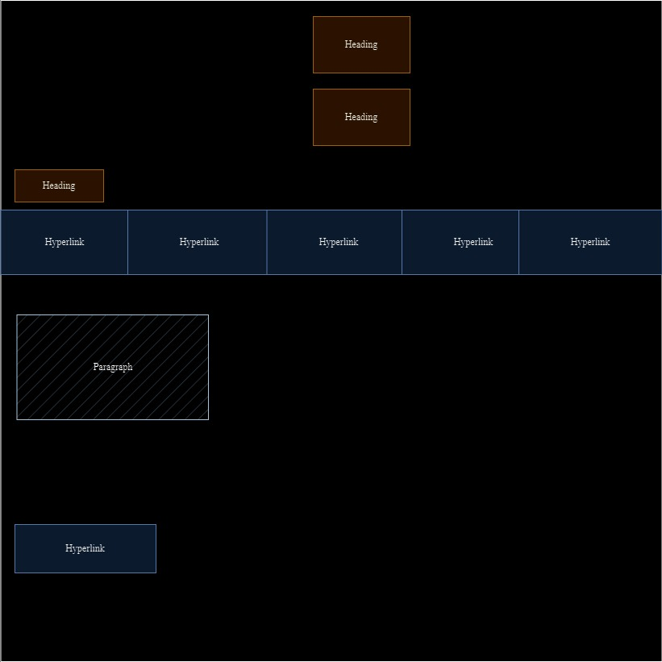

Jade Freeman
Web Programming Portfolio
Story Board
Website Pages
- Home Page: This page introduces viewers to the website, provides a brief introduction about me, and also contains a picture.
- Professional Page: This page provides viewers with a copy of my résumé, my vision and mission statements, as well as the requirements for my career path.
- Personality Page: This page gives viewers insight into my personality, containing my strongest emotions, traits, and hobbies, and how they impact my academic life. It also showcases my favorite scenes, my mentor, and my personality test results.
- Personal Development Page: This page provides the viewer with summaries of chapters from the book Twelve Pillars and explains how those chapters can be applied to my life, the degree I am pursuing, and the skills I have acquired since starting my studies.
- Story Board Page: This page provides viewers with visual blueprints representing each webpage.
- Reference Page: This page showcases all the sources that helped me complete this website.
Index Story Board
Professional Story Board
Personality Story Board
Personal Development Story Board
Reference Story Board

Top of the page